SIMULATION
One of the design goals of XSCHEM is the ability to launch a simulation without additional manual file editing. For this purpose XSCHEM stores in a schematic not only the circuit but also the simulator settings and the additional files that are needed. For example there is a devices/netlist.sym and devices/netlist_not_shown.sym symbol that can be placed in a schematic acting as a container of text files for all the needed SPICE models and any additional information to make the schematic ready for simulation.
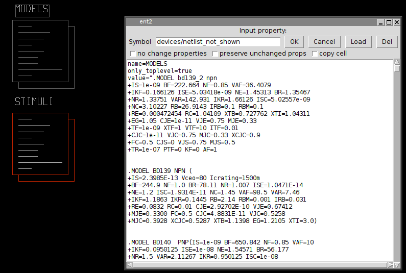The devices/netlist_not_shown symbol shown in the picture (with name MODELS) for example contains all the spice models of the components used in the schematic, this makes the schematic self contained, no additional files are needed to run a simulation. After generating the netlist (for example poweramp.spice) the resulting SPICE netlist can be sent directly for simulation (for example hspice -i poweramp.spice for the Hspice(TM) simulator).
VERILOG SIMULATION
This is a tutorial showing how to run a simulation with XSCHEM. The first important thing to note is that XSCHEM is just a schematic editor, so we need to setup valid bindings to simulators. For this tutorial we plan to do a Verilog simulation since there is a very good open source simulator available, called Icarus Verilog. There is also a good waveform viewer called gtkwave that is able to show simulator results. Install these two valuable tools and setup simulator invocation by using the Simulator configurator (Simulation->Configure Simulators and tools).
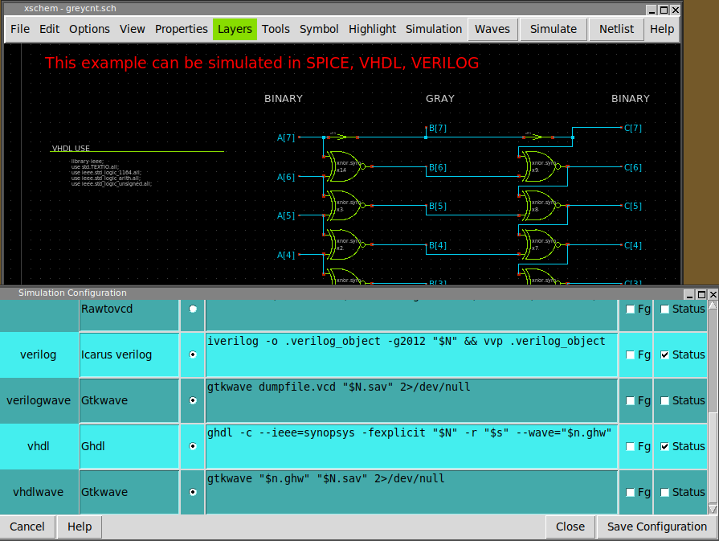The text entry on the verilog line is the command to invoke icarus verilog simulation. $N will be expanded to the netlist file ($netlist_dir/greycnt.v), while $n will be replaced with the circuit name without extension ($netlist_dir/greycnt). Note also the command to invoke gtkwave on the vcd file generated by theverilog simulation. If Save Configuration button is pressed the changes are made permanent by saving in a ~/.xschem/simrc file.
In the XSCHEM distribution there is one example design, examples/greycnt.sch.
Load this design:
user:~$ xschem examples/greycnt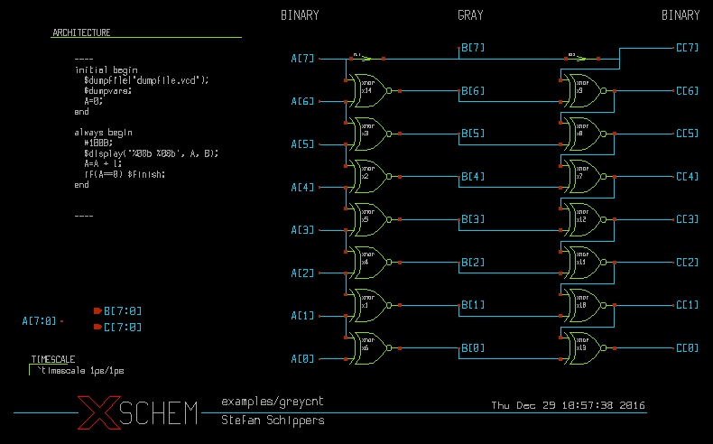
This testbench has a 8 bit input vector A[7:0] and two output vectors, B[7:0] and C[7:0]. B[7:0] is a grey coded vector, this mean that if A[7:0] is incremented as a binary number B[7:0] will increment by changing only one bit at a time. The C[7:0] vector is the reverse transformation from grey-code to binary, so at the end if simulation goes well C[7:0] == A[7:0]. In this schematic there are some components, the first one is the xnor gate, the second one is the assign element. The 'xnor' performs the logical 'Not-Xor' of its inputs, while 'assign' just propagates the input unchanged to the output, optionally with some delay. This is useful if we want to change the name of a net (putting two labels with different names on the same net is not allowed, since this is normally an error, leading to a short circuit).
An Ex-Nor gate can be represented as a verilog primitive, so for the xnor gate we just need to setup a verilog_format attribute in the global property string of the xnor.sym gate:
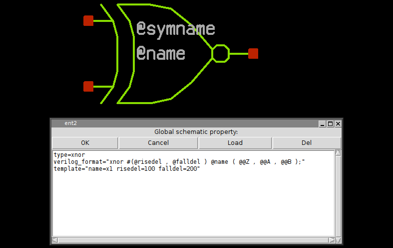the 'assign' symbol is much simpler, in this property string you see the definition for SPICE (format attribute), Verilog (verilog_format) and VHDL (vhdl_format). This shows how a single symbol can be used for different netlist formats.
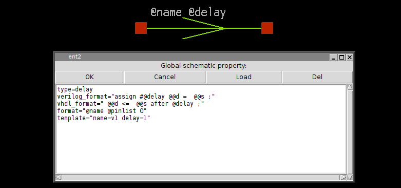While showing the top-level testbench greycnt set XSCHEM in Verilog mode (menu Options->Verilog radio button, or <Shift>V key) and press the edit property 'q' key, you will see some verilog code:
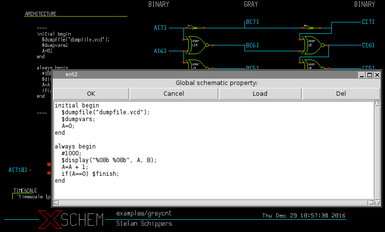This is the testbench behavioral code that generates stimuli for the simulation and gives instructions on where to save simulation results. If you generate the verilog netlist with the Netlist button on the right side of the menu bar (or <Shift>N key) a greycnt.v file will be generated in the simulation directory (${HOME}/xschem_library/simulations is the default path in the XSCHEM distribution, but can be changed with the set netlist_dir $env(HOME)/simulations in xschemrc file):
`timescale 1ps/1ps
module greycnt (
output wire [7:0] B,
output wire [7:0] C
);
reg [7:0] A ;
xnor #(1 , 1 ) x2 ( B[4] , A[5] , A[4] );
xnor #(1 , 1 ) x3 ( B[5] , A[6] , A[5] );
xnor #(1 , 1 ) x14 ( B[6] , A[7] , A[6] );
assign #1 B[7] = A[7] ;
xnor #(1 , 1 ) x1 ( B[1] , A[2] , A[1] );
xnor #(1 , 1 ) x4 ( B[2] , A[3] , A[2] );
xnor #(1 , 1 ) x5 ( B[3] , A[4] , A[3] );
xnor #(1 , 1 ) x6 ( B[0] , A[1] , A[0] );
xnor #(1 , 1 ) x7 ( C[4] , C[5] , B[4] );
xnor #(1 , 1 ) x8 ( C[5] , C[6] , B[5] );
xnor #(1 , 1 ) x9 ( C[6] , C[7] , B[6] );
assign #1 C[7] = B[7] ;
xnor #(1 , 1 ) x10 ( C[1] , C[2] , B[1] );
xnor #(1 , 1 ) x11 ( C[2] , C[3] , B[2] );
xnor #(1 , 1 ) x12 ( C[3] , C[4] , B[3] );
xnor #(1 , 1 ) x13 ( C[0] , C[1] , B[0] );
initial begin
$dumpfile("dumpfile.vcd");
$dumpvars;
A=0;
end
always begin
#1000;
$display("%08b %08b", A, B);
A=A + 1;
if(A==0) $finish;
end
endmodule
you will recognize the behavioral code right after the netlist specifying the connection of nets to the xnor and assign gates and all the necessary verilog declarations. If you press the Simulation button the Icarus Verilog simulator will be executed to compile (iverilog) and run (vvp) the simulation, a terminal window will show the simulation output, in this case the input vector A[7:0] and the grey coded B[7:0] vectors are shown. You can quit the simulator log window by pressing 'q'.
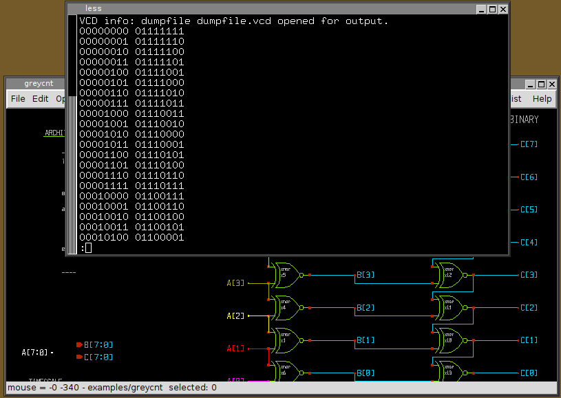If simulation completes with no errors waveforms can be viewed. Press the Waves button in the top-right of the menu bar, you may add waveforms in the gtkwave window:
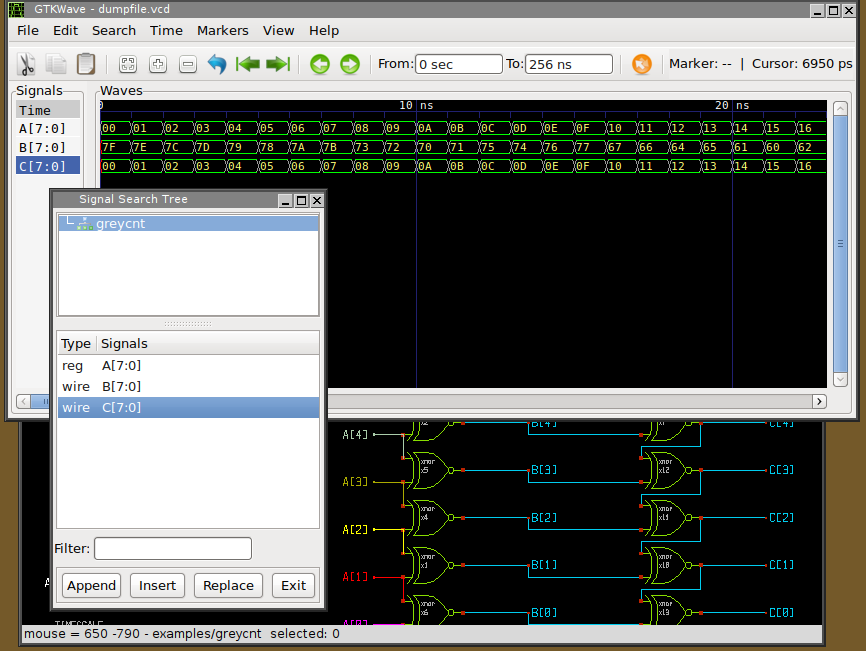If the schematic contains errors that the simulator can not handle instead of the simulation log a window showing the error messages from the simulator is shown:
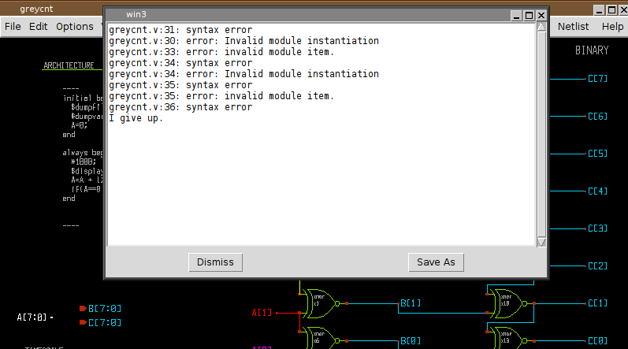To facilitate the debug you may wish to edit the netlist (Simulation->Edit Netlist) to locate the error, in the picture below i inserted deliberately a random string to trigger the failure:
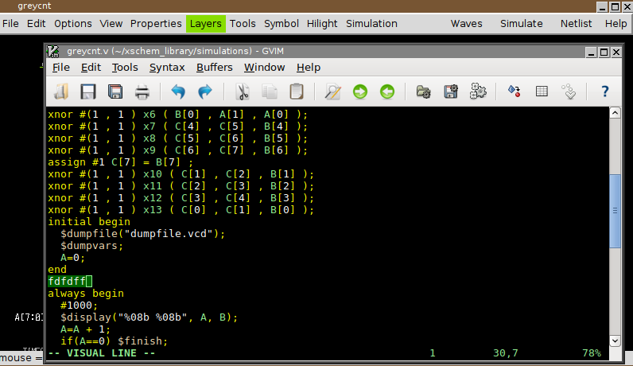As you can see the error is in the behavioral code of the top level greycnt schematic, so edit the global property ('q' key with no component selected) and fix the error.
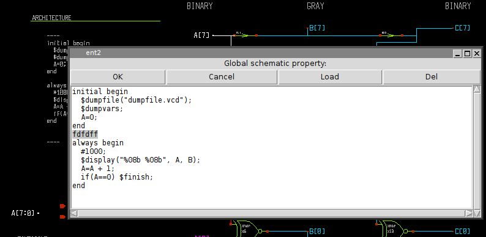